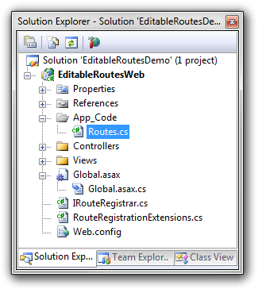

最近在新的專案上使用了WebAPI開發一些服務，結果因為以前的壞習慣讓我直接下意識地開了App_Code的資料夾並在資料夾內放了一些會常用到的Utilc或Common類型的class或static method。
機車的是當我build過後真正傳入參數作處理要取得服務資料時出現了一些莫名的RunTime Error…

前言
其中最讓我感到錯愕的就是他跟我說我傳入某一個method的參數不是我要的class類型…但我仔細一看我的程式碼
FXCK!是哪裡不一樣的類型(class)了啦，見鬼了！！！

結果弄了兩天我還是不知道這個RunTime Error是啥只好請問J神，一開始他的反應也是

但幾分種後馬上後來發現了我一個白痴的懷習慣把共用程式放到App_Code才導致一些莫名的怪情況
Bin and App_Code
在以往.NET的Web專案中如果要在網頁之間共用程式我們通常可以將程式碼保存在兩個特殊的資料夾，
Bin
- 已編譯的程式碼 (.dll 檔案)
- Web 應用程式中的任何其他程式碼 (例如網頁的程式碼) 都會自動參考它
App_Code
- 原始程式碼(.cs/.vb等檔案)
- 它會自動在執行階段編譯(處理成特殊的dll 檔案)。 產生的組件可由 Web 應用程式中的任何其他程式碼存取。
- 未明確標示為包含使用任一程式語言撰寫的檔案， 而是由.NET 自動根據資料夾目前包含的檔案，推斷要叫用哪一個編譯器(C#,VB或其他編譯器)。
兩個看起來很像，差別在App_Code資料夾存放原始程式碼而不是已編譯的程式碼，而且當你在建立你的Web應用程式時，.NET會幫你將放在App_Code的程式碼包成可此作執行的DLL檔案，但他是以一種特殊的方法來處理包裝的過程。
細看App_Code
在使用.NET建立Web專案時，VS會預設幫我們建立這一個資料夾，而這資料夾也俱有動態編譯的功能(預設的類型是不會編譯的，需要將每一個檔案都選擇為compiler)，而裡面可以放的檔案類型包含，自定控制項、自定class、interface 等都可以。
但由於在每次變更App_Code裡面資料時都會讓程式自動重新編譯，對於大型的專案會浪費太多時間，所以官方是建議將共用程式模組化後使用類別庫(class library)的方式來取代App_Code。
預設情況下App_Code在編譯時會被編譯成一個單獨的程式集(code base)，而預設編譯的語言會自動偵測你資料內使用的開發語言作編譯，如果需要支援多種語言就需要做下面的web.config設定：
1 | <compilation> |
如果不做作上面的設定，則所有在App_Code根目錄的內容會被打包成一個App_Code_xxxx.dll(xxxx是隨機產生的數字或文字)，所有子目錄會被打包成App_SubCode_yyyy_xxxx.dll(yyyy是子目錄名稱)
Devil is in details
而本次發生Runtime Error告訴我A類別不是A類別的原因就在於App_Code本身會自動將目錄內的資料編譯成一個特殊的dll給專案參考，而我多餘的就是在本身打包程式下更改了namespace，把App_Code移除換成我自己的命名的…
結果就導致我有兩個一樣名稱的class在兩個不同namespace的dll內，而在runtime時就會導致系統認為我這個class是ambiguously(不知道你是來自於Bin的dll還是App_Code自動編譯的dll)
解決方法就是將程式移出App_Code內在外部自行開資料夾使用，或是App_Code內的程式namespace都用預設的App_Code即可。
而補充上一節提到的，在.NET有兩種針對網頁有兩種開發模式，兩者比較可參考：
- Web site專案
- Web application專案

其中Web application專案不使用App_Code這個資料夾，而且預設也不會幫你加入該資料夾(但你要手動加入的話是不會阻擋的…)
為什麼Web application不適用可以參考[App_Code 資料夾不適用於 Web 應用程式專案](http://vishaljoshi.blogspot.tw/2009/07/appcode-folder-doesnt-work-with-web.html。
結語
會寫這篇文章其實要感謝J神幫我提醒了我這壞習慣，當我去問J神的對話如下：
Blackie:ㄟ，J神我有一個問題解了兩天還是不知道錯在哪邊可以請你幫我看一下是不是我寫法有問題嗎？
J神：蛤，build得過嗎？
Blackie:可以，是Runtime Error，他跟我說我自己新增的某一個class不能傳入某一個新的method作使用，因為method要傳入的變數型別跟我傳入的變數型別不同，但我是用我新增的class做傳入阿！
J神：蛤，你在說什麼啦！直接看程式啦！
Blackie:就這份,你看這明明就一樣的類別啊…
J神：哇靠…這啥小啊，一樣啊！
(2分鐘後)
J神：FXCK，你這白癡幹嘛把class的.cs檔案放到App_Code，這個資料夾很神奇啦，你把程式移出來在build一次run看看。
Blackie:…真的可以了，FXCK我都忘記了這個壞習慣了
J神：你說你這個問題花了幾天？
Blackie:婀…兩天半…
J神：Ｘ！我要把你當做案例提醒大家不要這樣
Blackie：…那我自己寫一篇網誌讓你tag吧….
其實這個白癡的問題早在好幾年前就有大神在耳邊提醒過了，問我為什麼會有這樣的壞習慣，其實是因為我看在大學做專題的時候買了一本神書上面寫的其中一段，但我一直只懂片面而不去瞭解實際運作模式，導致我完全相信了書上每一句話．(別誤會這本書真的寫得很好！而我也真的獲益良多)


這次再踩雷只好認真翻一下MSDN上面的文件，仔細搞懂運作模式，希望把這壞習慣徹底忘了！

開發路上不怕走偏走錯，就怕錯了還以為是對的結果越走越遠不知如何回頭，一步一步走得扎實才能往正確的地方前進，發現自己走錯的時候也能及時回頭。